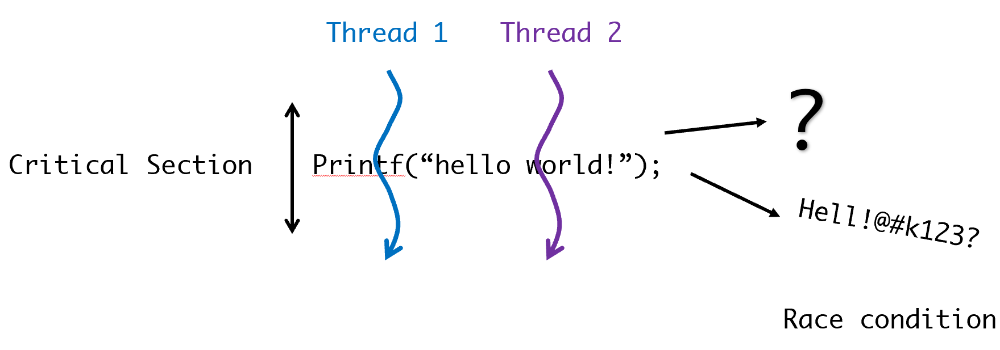
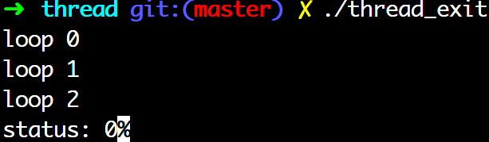

thread <1> pthread, mutex, API
Thread
- 새로운 프로세스를 만들지 않고 특정 문맥만 병렬로 실행할 수 있도록한다.
| Thread | Process |
| 프로세스의 서브셋 | 독립적 프로세스 |
| 코드, 데이터, 힙을 다른 스레드와 공유 각자의 스택, pc가짐 |
자신만의 주소 영역 |
| - | IPC로만 다른 프로세스와 통신 가능하다. |
| context switching 속도 빠름 | context switching 속도 스레드보다 느림 |
- fork가 copy-on-write방식으로 자식에게 복사하는데 비해 스레드는 많은 부분 공유하기 때문에 빠르다.
| platform | fork real |
user |
sys |
pthread real |
user |
sys |
| AMD 2.4 GHz Opteron (8cpus/node) | 41.07 | 60.08 | 9.91 | 0.66 | 0.19 | 0.43 |
| IBM 1.9 GHz POWER5 p5-575 (8cpus/node) | 64.24 | 30.78 | 27.68 | 1.75 | 0.69 | 1.10 |
| IBM 1.5 GHz POWER4 (8cpus/node) | 104.05 | 48.64 | 47.21 | 2.01 | 1.00 | 1.52 |
| INTEL 2.4 GHz Xeon (2 cpus/node) | 54.95 | 1.54 | 20.78 | 1.64 | 0.67 | 0.90 |
| INTEL 1.4 GHz Itanium2 (4 cpus/node) | 54.54 | 1.07 | 22.22 | 2.03 | 1.26 | 0.67 |
- kernel thread
- 하나의 프로세스=적어도 1개의 커널 스레드 가짐
- 하나의 프로세스=적어도 1개의 커널 스레드 가짐
- User thread
- 유저레벨에서 사용하는 스레드
- 각 스레드가 각각 가지는 자원
- errno
- 스레드 우선순위
- 스택
- tid
- 레지스터 및 sp
- 스레드끼리 공유하는 자원
- 작업 디렉토리
- fd
- 전역변수와 데이터들
- UID, GID
- signal
Multi thread 프로그램 단점
- 하나의 Thread에서 발생된 문제가 전체 Process에 영향
- 디버깅이 어렵다.
Pthread
- 리눅스에서는 pthread(Posix thread) 지원
- 컴파일 때 "-lpthread" 링크 옵션
- signal은 프로세스단위로 작동한다.
- Thread은 각 스레드마다 다른 시그널 정책이 필요하므로, 스레드 전용의 시그널 제어 함수가 필요
Pthread
pthread_create: 스레드 생성
#include <pthread.h>
int pthread_create(pthreads_t *thread, pthread_attr_t *attr, void *(*start_routin)(void *), void *arg);
| parameter | Description |
| *thread | 스레드가 성공적으로 생성됬을 때, 넘겨주는 쓰레드 식별 번호 |
| *attr | 스레드 특성 설정하기 위해 사용. NULL일 경우 기본 특성 |
| *start_routine | 스레드가 수행할 함수, 함수포인터를 넘긴다. |
| *arg | 스레드 함수 start_routine을 실행시킬 때, 넘겨줄 아규먼트 |
| return | value |
| 성공 | 0 |
| 실패 | errno |
- pthread_create( &tid, attr, function, (void *)arg);
- thread의 argument는 void *
- 64bit system에서는 thread에 보내는 정수형 argument는
longarg으로 할 것
pthread_join: 스레드 정리
#include <pthread.h>
int pthread_join(pthread_t th, void **thread_return);
| parameter | Description |
| th | pthread_create에 의해 생성된 식별번호 th를 기다린다. |
| thread_return | 식별번호 th의 return 값 |
- pthread_create 때 detach하게 생성 시
- 생성된 스레드는 나중에 join되지 않을 것이라고 생각
- 종료하자마자 모든 자원을 해제하며 pthread_join으로 기다릴 수 없다.
- 부모 스레드와 떨어져서 완전히 독립적으로 작용
- join시, BLOCKING!
pthread_create(), pthread_join()에서 argument
- 왼) long 형 오) long * 형 arg 주고 받기
- 각 함수 선언 원형대로 Type casing해서 보내면됨
예제 1. 간단한 pthread
#include <stdio.h>
#include <stdlib.h>
#include <unistd.h>
#include <pthread.h>
// 쓰레드 함수
void *t_function(void *data){
long id=*((long *)data);
printf("thread: %ld\n",id);
return (void**)id;
}
int main(void){
pthread_t p_thread[2];
int t_id;
long a=1, b=3; // x64 system에서는 long 쓰자!!
// 스레드 생성 아규먼트로 1을 넘긴다.
t_id=pthread_create(&p_thread[0], NULL, t_function, &a);
if(t_id<0){
perror("thread create error: ");
exit(0);
}
// 스레드 생성 아규먼트로 2를 넘긴다.
t_id=pthread_create(&p_thread[1], NULL, t_function, &b);
if(t_id<0){
perror("thread create error: ");
exit(0);
}
long status1;
long status2;
pthread_join(p_thread[0], (void**)&status1);
pthread_join(p_thread[1], (void**)&status2);
printf("status1: %ld\n", status1);
printf("status2: %ld\n", status2);
return 0;
}
$ gcc simple_thread.c -lpthread -o simple_thread
$ ./simple_thread
thread1: 1
thread2: 3
status1: 1
status2: 3
예제 2. double pointer arg 사용하는 스레드
#include <stdio.h>
#include <stdlib.h>
#include <pthread.h>
typedef struct{
int **arr;
}PARAM;
void *t_func(void *args){
PARAM *param=(PARAM *)args;
(param->arr)[0][0]=5;
return param;
}
int main(void){
pthread_t tid;
pthread_attr_t attr;
PARAM *param;
param=(PARAM*)malloc(sizeof(PARAM));
param->arr=(int**)malloc(sizeof(int)*1);
param->arr[0]=(int*)malloc(sizeof(int)*1);
pthread_attr_init(&attr);
pthread_create(&tid, &attr, t_func, (void *)param);
PARAM* return_param;
pthread_join(tid, (void **)&return_param);
printf("%d\n", (return_param->arr)[0][0]);
return 0;
}
- 2 차원 배열은 structure 안에 넣어서 전달해야한다.
pthread_detach(): 자식, 부모 스레드 분리하기
- pthread_detach를 이용해서, 자식 스레드와 부모 스레드와 완전히 분리한다.
- 자식 스레드가 종료시, 모든 자원이 즉시 반납된다.
- detach 시, 자식 종료 상태를 알 수 없다.
#include <pthread.h>
int pthread_detach(pthread_t thread);
- detach할 thread넣기
#include <stdio.h>
#include <stdlib.h>
#include <unistd.h>
#include <pthread.h>
// 쓰레드 함수
// 1초를 기다린 후, 아규먼트^2를 리턴한다.
void *t_function(void *data){
char a[100000];
int num=*((int *)data);
printf("Thread Start\n");
sleep(5);
printf("Thread end\n");
}
int main(void){
pthread_t p_thread;
int thr_id;
int status;
int a=100;
printf("Before Thread\n");
thr_id=pthread_create(&p_thread,NULL,t_function,(void *)&a);
if(thr_id<0){
perror("thread create error : ");
exit(0);
}
// 식별번호 p_thread를 가지는 스레드를 detach
// 시켜준다.
pthread_detach(p_thread);
pause();
return 0;
}
Synchronization
mutex 잠금
- Race condition(경쟁 상태)
- 둘 이상의 프로세스/Thread가 동시에 어떤 작업을 수행 시, 타이밍 등에 의해 의도치 않은 결과가 나올 수 있는 상태
- Critical Section(임계 영역)
- 둘 이상의 프로세스/Thread가 동시에 접근하면 안되는 공유데이터를 접근하는 코드 영역
- 즉, Race Condition을 발생 시킬 수 있는 코드 영역

- Race condition을 해결하기 위한 간단한 방법: Lock mechanism
- Thread가 critical section code에 진입할 수 있는 열쇠를(Lock을 획득) 얻어야 Critical section code에 진입할 수 있다.
- Thread가 critical section code에 진입할 수 있는 열쇠를(Lock을 획득) 얻어야 Critical section code에 진입할 수 있다.
- Mutex을 이용한 동기화에서는 Mutex가 lock의 역할을 한다.
- Mutex사용을 위해서는 다음의 4가지 함수가 필요하다.
- Mutex 잠금객체를 만드는 함수
- Mutex 잠금을 얻는 함수
- Mutex 잠금을 되돌려 주는 함수
- Mutex 잠금객체를 제거하는 함수
- mutex는 아래 요소들을 보장함으로써 임계영역(Critical Section)을 잠금다.
- Atomicity: mutex 잠금은 최소단위 연적 - Atomic operation - 을 보장한다.
- Atomic operation은 일련의 연산 즉 mutex 잠금 연산이 끝날 때까지 다른 프로세스가 그 연산의 변화를 알 수 없는 상태가 되는 연산
- 전체 연산 중 하나라도 실패할 경우 모든 연산이 실패하며, 시스템은 전체 연산이 시작하기 전의 상태로 복구된다.
- Singularity: 한 스레드가 뮤택스 lock을 획득했다면, 이 스레드가 뮤택스 잠금을 내놓기 전까지는 다른 스레드가 뮤텍스 lock을 얻을 수 없도록한다.
- None Busy Wait: 성능 관련, Busy wait (X)
- Atomicity: mutex 잠금은 최소단위 연적 - Atomic operation - 을 보장한다.
pthread_mutex_init
- pthread_mutex_init()으로 잠금 객체를 만든다.
#include <pthread.h>
pthread_mutex_t mutex; // mutex object
int pthread_mutex_init(pthread_mutex_t *mutex, const pthread_mutex_attr *attr);
| parameter | Description |
| *mutex | mutex 잠금객체 |
| *attr | mutex type 결정, () 매크로 fast (PTHREAD_MUTEX_INITIALIZER): 하나의 스레드가 하나의 잠금만을 얻을 수 있는 일반적 형태 recursive (PTHREAD_RECURSIVE_MUTEX_INITIALIZER): 잠금을 얻은 스레드가 다시 잠금을 얻을 수 있다. 이 경우 잠금에 대한 카운트가 증가하게 된다. error checking (PTHREAD_RECURSIVE_MUTEX_INITIALIZER): NULL: 기본값 fast |
선언 방법 1.
- pthread_mutex_t mutex = PTHREAD_MUTEX_INITIALIZER;
선언 방법 2.
- pthread_mutex_t mutex;
pthread_mutex_init(&mutex, NULL);
pthread_mutex_destroy
#include <pthread.h>
int pthread_mutex_destroy(pthread_mutex_t *mutex);
- 기능: mutex 객체 파괴.
주의!!: locked mutex를 파괴 시도 시, EBUSY 에러 코드
| return | Value |
| 성공 | 0 |
| 실패 | errno |
- 뮤텍스를 사용할 일이 없다면 제거(free)하자.
pthread_mutex_{,try_}lock
#include <pthread.h>
int pthread_mutex_lock(pthread_mutex_t *mutex);
- pthread_mutex_lock으로 lock을 요청한다.
- 만약 lock을 선점한 스레드가 있다면, 요청한 스레드는 대기 상태가 된다.
#include <pthread.h>
int pthread_mutex_try_lock(pthread_mutex_t *mutex);
- 만약 잠금을 얻을 수 있는지만 체크하고 대기(블럭)상태로 되지 않고 다음 코드로 넘어가야한다면..
pthread_mutex_unlock
#include <pthread.h>
int pthread_mutex_unlock(pthread_mutex_t *mutex);
- mutex lock을 되돌려준다.
뮤텍스 잠금 예제
#include <stdio.h>
#include <stdlib.h>
#include <pthread.h>
#include <unistd.h>
int ncount; // 스레드가 공유되는 자원
pthread_mutex_t mutex = PTHREAD_MUTEX_INITIALIZER; // 스레드 초기화
/* mutex object를 전역으로 선언해 어디서든 사용될 수 있게 하자. */
// 스레드 함수 1
void* do_loop(void *data){
int i;
pthread_mutex_lock(&mutex); // 뮤텍스 락
for(i=0;i<10;i++){
printf("loop1 : %d ",ncount);
ncount ++;
sleep(1);
}
pthread_mutex_unlock(&mutex); // 잠금을 해제
}
// 스레드 함수 2
void *do_loop2(void *data){
int i;
/* 잠금을 얻으려고 하지만 do_loop에서 이미 잠금을 얻었으므로
잠금이 해제될때까지 기다린다. */
pthread_mutex_lock(&mutex); // 잠금을 생성한다.
for(i=0; i<10; i++){
printf("loop2 : %d ", ncount);
ncount++;
sleep(1);
}
pthread_mutex_unlock(&mutex); // 잠금 해제
}
int main(void){
int thr_id;
pthread_t p_thread[2];
int status;
int a = 1;
ncount=0;
thr_id=pthread_create(&p_thread[0], NULL, do_loop, (void *)&a);
sleep(1);
thr_id=pthread_create(&p_thread[1], NULL, do_loop2, (void *)&a);
pthread_join(p_thread[0], (void *)&status);
pthread_join(p_thread[1], (void *)&status);
status=pthread_mutex_destroy(&mutex);
printf("code = %d\n", status);
printf("programing is end\n");
return 0;
}
pthread API II.
pthread_exit(): 현재 실행 중인 스레드 종료

주의!! Mutex 영역에서 pthread_exit()가 호출되어 버릴 경우, 다른 스레드는 영원히 block 될 수 있다.
pthread_cleanup_push(): 스레드 종료시 호출할 루틴
#include <pthread.h>
void pthread_cleanup_push(void (*routine) (void *), void *arg);
- 기능: cleanup handler를 인스톨한다.
- pthread_exit()가 호출되어 스레드 종료시, pthread_cleanup_push()에 의해 인스톨된 함수가 호출된다.
- routine이 스레드가 종료될때 호출되는 함수. arg는 아규먼트이다.
- cleanup handler 는 자원을 돌려주거나, Mutex 잠금 등의 해제를 위한 용도로 사용
- Mutex 영역에서 pthread_exit()가 호출되어 버릴 경우, 다른 스레드는 영원히 block 될 수 있다.
- malloc으로 할당 받은 메모리, 열린 fd를 닫기 위해서로 사용한다.
pthread_cleanup_pop(): cleanup handler제거
#include <pthread.h>
void pthread_cleanup_pop(int execute);
- 기능
- execute == 0, pthread_cleanup_push() 에 의해 인스톨된 cleanup handler를 실행치 않고, 삭제만 시킨다.
- execute != 00, cleanup handler를 실행하고, 삭제한다.
<주의!> pthread_cleanup_push()와 pthread_cleanup_pop()은 반드시 같은 함수 내의 같은 레벨의 블럭에서 한 쌍으로 사용
pthread_cleanup_{push,pop}() 예제
pthread_self():
#include <pthread.h>
pthread_t pthread_self(void);
- 기능: pthread_self 를 호출하는 현재 스레드의 스레드 식별자를 되돌려준다.
#include <stdio.h>
#include <pthread.h>
void *func(void *a){
pthread_t id;
id=pthread_self(); // 스레드 함수 자신의 pthread id
printf("pthread id in thread func: %ld\n", id);
}
int main(int argc, char *argv[]){
pthread_t p_thread[2];
pthread_create(&p_thread[0], NULL, func, (void *)NULL);
printf("pthread id in main: %ld\n", p_thread[0]);
pthread_create(&p_thread[1], NULL, func, (void *)NULL);
printf("pthread id in main: %ld\n", p_thread[1]);
return 0;
}